Android搭建-从入门到入土（二）
计算器制作
简介
本节涉及到的知识面为：
- 默认Activity配置
- Activity获取layout中组件
- Activity中组件的监听器
准备
新建项目，删除包下的java文件和res/layout下的xml文件，删除后文件结构大概长这样
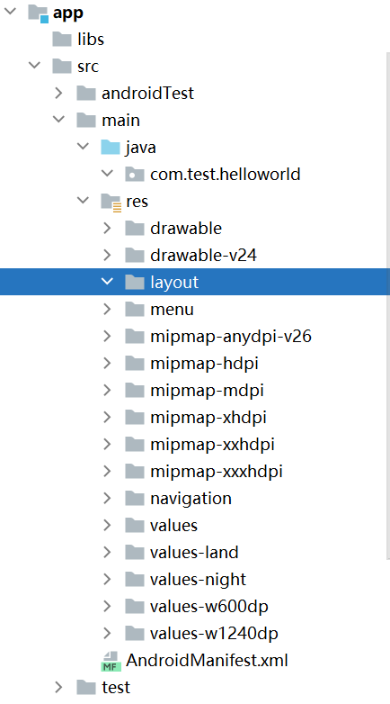
新建Activity
在前一章节中，新建项目是选择Basic Activity。这样IDE会默认生成一些类和layout文件，但是我们设计自己的Activity就需要选择empty Activity，这样创建的页面会非常清洁。
在layout中右键按照如下图新建一个empty Activity
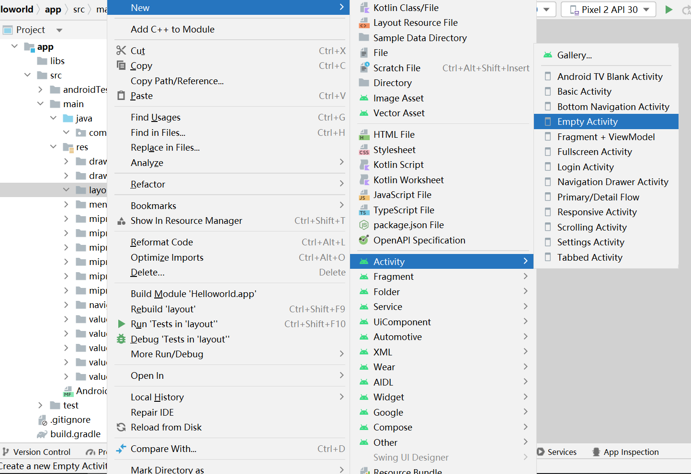
编辑UI
首先认识IDE的编辑界面的功能
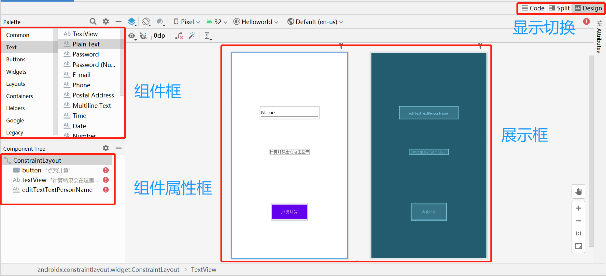
打开activity_main.xml，在Design界面中首先加入LinearLayout，然后分别拖动Button、TextView、EditText、Space，放到合适的位置后，在Code页面中更改它们的text属性，更改后代码如下：
<?xml version="1.0" encoding="utf-8"?>
<androidx.constraintlayout.widget.ConstraintLayout
xmlns:android="http://schemas.android.com/apk/res/android"
xmlns:tools="http://schemas.android.com/tools"
xmlns:app="http://schemas.android.com/apk/res-auto"
android:layout_width="match_parent"
android:layout_height="match_parent"
tools:context=".MainActivity">
<LinearLayout
android:orientation="vertical"
android:layout_width="409dp"
android:layout_height="729dp" tools:layout_editor_absoluteY="1dp" tools:layout_editor_absoluteX="1dp">
<Space
android:layout_width="match_parent"
android:layout_height="75dp"/>
<EditText
android:layout_width="match_parent"
android:layout_height="56dp"
android:inputType="textPersonName"
android:text="输入式子"
android:ems="10"
android:id="@+id/editTextTextPersonName2"/>
<Space
android:layout_width="match_parent"
android:layout_height="75dp"/>
<TextView
android:text="计算结果显示"
android:layout_width="match_parent"
android:layout_height="wrap_content" android:id="@+id/textView3"/>
<Space
android:layout_width="match_parent"
android:layout_height="67dp"/>
<Button
android:text="点我计算"
android:layout_width="match_parent"
android:layout_height="wrap_content" android:id="@+id/button3"/>
</LinearLayout>
</androidx.constraintlayout.widget.ConstraintLayout>注意，之前删除MainActivity后，系统会找不到默认的Activity，这个时候就需要在AndroidManifest.xml中增加默认Activity，就是在activity中添加过滤器，其中<category android:name="android.intent.category.LAUNCHER"/>为启动时的首个页面，代码如下：
<?xml version="1.0" encoding="utf-8"?>
<manifest xmlns:android="http://schemas.android.com/apk/res/android"
package="com.test.helloworld">
<application
android:allowBackup="true"
android:icon="@mipmap/ic_launcher"
android:label="@string/app_name"
android:roundIcon="@mipmap/ic_launcher_round"
android:supportsRtl="true"
android:theme="@style/Theme.Helloworld">
<activity
android:name=".MainActivity"
android:exported="true">
<intent-filter>
<action android:name="android.intent.action.MAIN"/>
<category android:name="android.intent.category.LAUNCHER"/>
</intent-filter>
</activity>
</application>
</manifest>点击运行后，在虚拟机中可看到结果
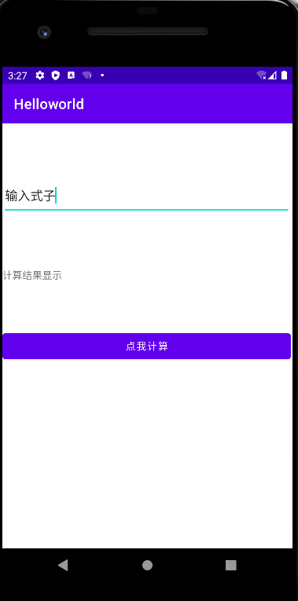
运行逻辑编辑
可看到在layout中的组件都有它们相应的id，比如说我们创建的button，可看到它的id为button3，这个可以在android:id="@+id/button3"中找到
回到MainActivity.java中，寻找该id并返回Button类，并且为该类添加监听器。我们可以利用这个方法来进行组件之间的联动，比如说可以将标签变为按钮被点击了
Button caculate = this.findViewById(R.id.button3); // 获取layout中的按钮
TextView textView3 = this.findViewById(R.id.textView3); // 获取layout中的标签
/* 设置按钮监听器，点击按钮后让标签变成按钮被点击了 */
caculate.setOnClickListener(new View.OnClickListener() {
@Override
public void onClick(View v) {
textView3.setText("按钮被点击了");
}
});运行后，当点击按钮后，会发现标签文字更改了
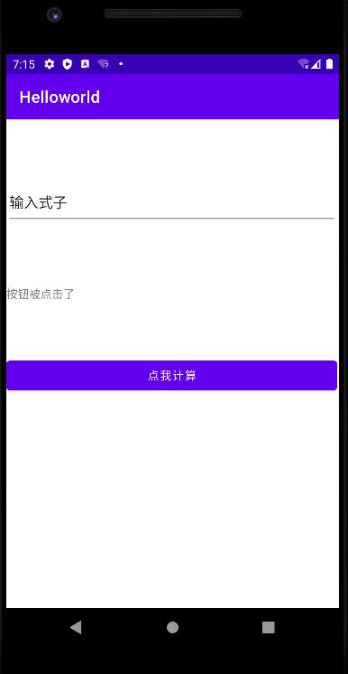
以此类推，我们可以获取输入框中用户输入的字，然后对字进行处理并输出结果。总代码如下：
public class MainActivity extends AppCompatActivity {
/**
* 计算式子并返回结果，该方法只支持减法，并且只支持减一次(类似于10-5这种)
* @param caculated 算式
* @return 结果
*/
private String caculate(String caculated){
String[] minus = caculated.split("-");
int caculate = Integer.valueOf(minus[0]) - Integer.valueOf(minus[1]);
return String.valueOf(caculate);
}
@Override
protected void onCreate(Bundle savedInstanceState) {
super.onCreate(savedInstanceState);
setContentView(R.layout.activity_main); // 获取layout
Button caculate_confirm = this.findViewById(R.id.button3); // 获取layout中的按钮
EditText editText = this.findViewById(R.id.editText3); // 获取layout中的编辑框
TextView textView = this.findViewById(R.id.textView3); // 获取layout中的标签
/* 设置按钮监听器，点击按钮后让标签变成结果 */
caculate_confirm.setOnClickListener(new View.OnClickListener() {
@Override
public void onClick(View v) {
String equation = editText.getText().toString();
textView.setText(caculate(equation));
}
});
}
}运行，在输入框中输入2000-1000，可看到结果显示在标签上
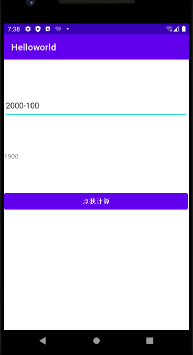
电话制作
简介
本节涉及到的知识面为：
- Intent类
- 安卓权限
准备
新建项目，这一次选择的是empty Activity
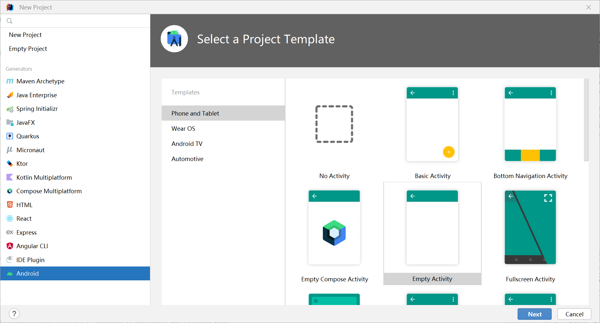
这样的操作新建项目后，项目是十分清洁的，就不用删除多余的Activity和配置默认Activity了（有特殊需求的除外）
编辑UI
打开activity_main.xml，在Design界面中首先加入LinearLayout，然后分别拖动Phone、Space、Button，放到合适的位置后，在Code页面中更改它们的text属性，更改后代码如下：
<?xml version="1.0" encoding="utf-8"?>
<androidx.constraintlayout.widget.ConstraintLayout
xmlns:android="http://schemas.android.com/apk/res/android"
xmlns:tools="http://schemas.android.com/tools"
xmlns:app="http://schemas.android.com/apk/res-auto"
android:layout_width="match_parent"
android:layout_height="match_parent"
tools:context=".MainActivity">
<LinearLayout
android:orientation="vertical"
android:layout_width="409dp"
android:layout_height="729dp" tools:layout_editor_absoluteY="1dp" tools:layout_editor_absoluteX="1dp">
<Space
android:layout_width="match_parent"
android:layout_height="60dp"/>
<EditText
android:layout_width="match_parent"
android:layout_height="wrap_content"
android:inputType="phone"
android:ems="10"
android:id="@+id/editTextPhone"/>
<Space
android:layout_width="match_parent"
android:layout_height="346dp"/>
<Button
android:text="点我打电话"
android:layout_width="match_parent"
android:layout_height="wrap_content" android:id="@+id/button"/>
</LinearLayout>
</androidx.constraintlayout.widget.ConstraintLayout>运行后效果如下：
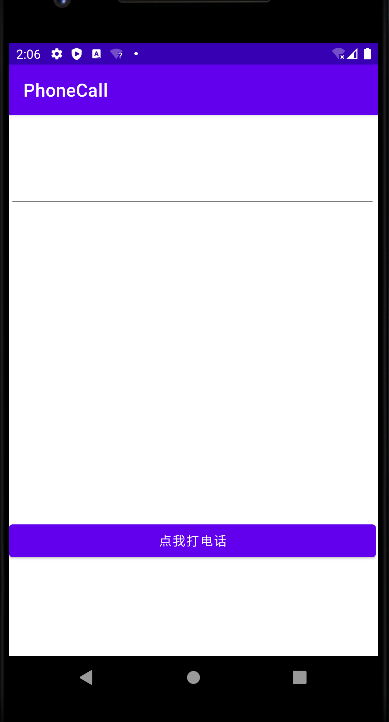
运行逻辑编辑
通过id查找组件后，对按钮填加监听器，获取电话框的内容。
对于打电话的内容，借助于 Intent 可以轻松实现拨打电话的应用程序。只需声明一个拨号的 Intent 对象，并使用 startActivity() 方法启动即可。
创建 Intent 对象的代码为 Intent intent = new Intent(action,uri)，其中 URI 是要拨叫的号码数据，通过 Uri.parse() 方法把“tel:1234”格式的字符串转换为 URI。
而 Action 有两种使用方式：
- Intent.ACTION_CALL。是直接进行呼叫的方式，这种方式需要应用程序具有 android.permission.CALL_PHONE 权限。
- Intent.ACTION_DIAL。不是不直接进行呼叫，而是启动 Android 系统的拨号应用程序，然后由用户进行拨号。这种方式不需要任何权限的设置。
代码如下：
EditText phone = this.findViewById(R.id.editTextPhone); // 电话
Button call = this.findViewById(R.id.button); // 点我打电话按钮
call.setOnClickListener(new View.OnClickListener() {
@Override
public void onClick(View v) {
String phoneText = phone.getText().toString(); // 获取电话
Intent intent = new Intent(Intent.ACTION_CALL, Uri.parse("tel:"+phoneText)); // 设置打电话意图
startActivity(intent); // 开启意图
}
});运行后，点击按钮后，发现运行出错，而报错的内容如下：
java.lang.SecurityException: Permission Denial: starting Intent { act=android.intent.action.CALL dat=tel:xxxxxxxxxxx cmp=com.android.server.telecom/.components.UserCallActivity } from ProcessRecord{97b69f4 19614:com.test.phonecall/u0a432} (pid=19614, uid=10432) requires android.permission.CALL_PHONE大致翻译可知道，该操作需要权限，权限为：android.permission.CALL_PHONE
打开AndroidManifest.xml，在application标签前添加：
<uses-permission android:name="android.permission.CALL_PHONE" />在Android 6.0 以下的手机，无论是什么权限都可以直接通过，直接使用权限。但是在Android 6.0 以上会被系统手机拒绝，所以需要代码中动态申请权限，并且让用户接受了才能使用，增加了安全性。申请权限的代码如下：
/**
* 检查权限，若不存在则申请权限
*/
private void request_check_permissions(){
if (ContextCompat.checkSelfPermission(this, Manifest.permission.CALL_PHONE)!= PackageManager.PERMISSION_GRANTED) {
String[] permissions = {Manifest.permission.CALL_PHONE}; // 权限列表
// 最后的请求码是对应回调方法的请求码
ActivityCompat.requestPermissions(this,permissions,1001);
} else {
Toast.makeText(this, "你已经有权限了，可以直接拨打电话", Toast.LENGTH_LONG).show(); // 跳出弹窗提示
}
}MainActivity.java的代码如下：
public class MainActivity extends AppCompatActivity {
/**
* 检查权限，若不存在则申请权限
*/
private void request_check_permissions(){
if (ContextCompat.checkSelfPermission(this, Manifest.permission.CALL_PHONE)!= PackageManager.PERMISSION_GRANTED) {
String[] permissions = {Manifest.permission.CALL_PHONE}; // 权限列表
// 最后的请求码是对应回调方法的请求码
ActivityCompat.requestPermissions(this,permissions,1001);
} else {
Toast.makeText(this, "你已经有权限了，可以直接拨打电话", Toast.LENGTH_LONG).show(); // 跳出弹窗提示
}
}
@Override
protected void onCreate(Bundle savedInstanceState) {
super.onCreate(savedInstanceState);
setContentView(R.layout.activity_main);
EditText phone = this.findViewById(R.id.editTextPhone); // 电话
Button call = this.findViewById(R.id.button); // 点我打电话按钮
call.setOnClickListener(new View.OnClickListener() {
@Override
public void onClick(View v) {
String phoneText = phone.getText().toString(); // 获取电话
request_check_permissions();
Intent intent = new Intent(Intent.ACTION_CALL, Uri.parse("tel:"+phoneText)); // 设置打电话意图
startActivity(intent); // 开启意图
}
});
}
}运行，输入号码后，系统会申请权限，点击允许
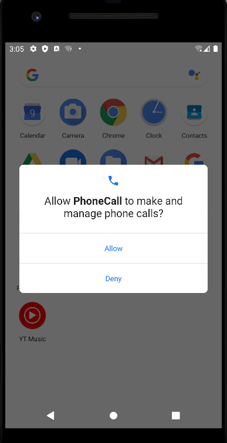
再次打开app，输入号码，点击按钮，发现弹框出现，并且能成功打电话了
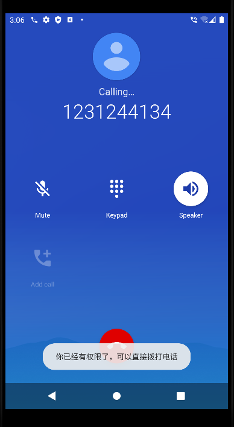
注意，Intent.ACTION_CALL改为Intent.ACTION_DIAL后，无需申请权限，到这里，电话程序编写完毕。
聊天软件制作
简介
本节涉及到的知识面为：
- 多界面的切换与逻辑
- jar包的导入
- 安卓中的websocket通信
准备
新建项目，选择empty Activity
编辑UI
打开activity_main.xml，在Design界面中首先加入LinearLayout，然后分别拖动EditText、Multiline Text、Space、Button，放到合适的位置后，在Code页面中更改它们的text属性，更改后代码如下：
<?xml version="1.0" encoding="utf-8"?>
<androidx.constraintlayout.widget.ConstraintLayout
xmlns:android="http://schemas.android.com/apk/res/android"
xmlns:tools="http://schemas.android.com/tools"
xmlns:app="http://schemas.android.com/apk/res-auto"
android:layout_width="match_parent"
android:layout_height="match_parent"
tools:context=".MainActivity">
<LinearLayout
android:orientation="vertical"
android:layout_width="409dp"
android:layout_height="729dp" tools:layout_editor_absoluteY="1dp" tools:layout_editor_absoluteX="1dp">
<Space
android:layout_width="match_parent"
android:layout_height="145dp"/>
<EditText
android:layout_width="match_parent"
android:layout_height="wrap_content"
android:inputType="textPersonName"
android:text=""
android:ems="10"
android:id="@+id/edit"/>
<Space
android:layout_width="match_parent"
android:layout_height="40dp"/>
<EditText
android:layout_width="match_parent"
android:layout_height="192dp"
android:inputType="textMultiLine"
android:gravity="start|top"
android:ems="10"
android:id="@+id/multiply_line"/>
<Space
android:layout_width="match_parent"
android:layout_height="27dp"/>
<Button
android:text="发送"
android:layout_width="match_parent"
android:layout_height="wrap_content" android:id="@+id/send"/>
<Space
android:layout_width="match_parent"
android:layout_height="24dp"/>
<Button
android:text="服务器设置"
android:layout_width="match_parent"
android:layout_height="wrap_content" android:id="@+id/button2"/>
</LinearLayout>
</androidx.constraintlayout.widget.ConstraintLayout>运行后效果如下：
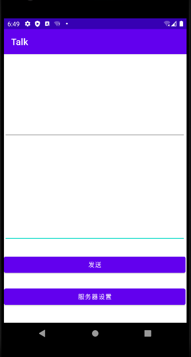
EditText作为消息发送的文字书写处，Multiline Text作为接收文字的显示处（本篇暂时不写该逻辑）。
二级页面制作与跳转
在layout中右键新建一个empty Acitivity，命名为ServerSettings，打开activity_server_settings.xml在Design界面中首先加入LinearLayout，然后分别拖动EditText、TextView、Space、Button，放到合适的位置后，在Code页面中更改它们的text属性，更改后代码如下：
<?xml version="1.0" encoding="utf-8"?>
<androidx.constraintlayout.widget.ConstraintLayout
xmlns:android="http://schemas.android.com/apk/res/android"
xmlns:tools="http://schemas.android.com/tools"
xmlns:app="http://schemas.android.com/apk/res-auto"
android:layout_width="match_parent"
android:layout_height="match_parent"
tools:context=".ServerSettings">
<LinearLayout
android:orientation="vertical"
android:layout_width="409dp"
android:layout_height="729dp" tools:layout_editor_absoluteY="1dp" tools:layout_editor_absoluteX="1dp">
<Space
android:layout_width="match_parent"
android:layout_height="191dp"/>
<TextView
android:text="服务器id:端口"
android:layout_width="match_parent"
android:layout_height="wrap_content" android:id="@+id/textView"/>
<Space
android:layout_width="match_parent"
android:layout_height="19dp"/>
<EditText
android:layout_width="match_parent"
android:layout_height="64dp"
android:inputType="textPersonName"
android:text=""
android:ems="10"
android:id="@+id/editTextTextPersonName"/>
<Space
android:layout_width="match_parent"
android:layout_height="85dp"/>
<Button
android:text="连接"
android:layout_width="match_parent"
android:layout_height="wrap_content" android:id="@+id/button"/>
<Space
android:layout_width="match_parent"
android:layout_height="23dp"/>
<Button
android:text="返回聊天页面"
android:layout_width="match_parent"
android:layout_height="wrap_content" android:id="@+id/button3"/>
</LinearLayout>
</androidx.constraintlayout.widget.ConstraintLayout>进入到mainActivity.java中，使用intent类为”服务器设置”按钮设置页面跳转：
Button serverSettingView = this.findViewById(R.id.button2);
serverSettingView.setOnClickListener(new View.OnClickListener() {
@Override
public void onClick(View v) {
Intent intent = new Intent(); // 设置意图
intent.setClass(MainActivity.this,ServerSettings.class); // 设置跳转的页面
startActivity(intent); // 开始运行
}
});进入到ServerSettings.java中，使用intent类为”返回聊天页面”按钮设置页面跳转：
Button MainActivityView = this.findViewById(R.id.button2);
MainActivityView.setOnClickListener(new View.OnClickListener() {
@Override
public void onClick(View v) {
Intent intent = new Intent(); // 设置意图
intent.setClass(ServerSettings.this,MainActivity.class); // 设置跳转的页面
startActivity(intent); // 开始运行
}
});这样跳转就准备完成了
这里有个坑需要注意，在进行intent跳转后，第二个Acitivity会先调用onCreate方法，也就是重新创建了一个Acitvity，而不是onstart()。
AndroidManifest.xml多个页面的配置
前面知道，<category android:name="android.intent.category.LAUNCHER"/>为启动app后的首个页面，对于其他页面，使用<category android:name="android.intent.category.DEFAULT"/>即可
AndroidManifest.xml的代码如下：
<?xml version="1.0" encoding="utf-8"?>
<manifest xmlns:android="http://schemas.android.com/apk/res/android"
package="com.test.talk">
<application
android:allowBackup="true"
android:icon="@mipmap/ic_launcher"
android:label="@string/app_name"
android:roundIcon="@mipmap/ic_launcher_round"
android:supportsRtl="true"
android:theme="@style/Theme.Talk">
<!-- 主页面 -->
<activity
android:name=".MainActivity"
android:exported="true">
<intent-filter>
<action android:name="android.intent.action.MAIN"/>
<category android:name="android.intent.category.LAUNCHER"/>
</intent-filter>
</activity>
<!-- 服务器设置页面 -->
<activity
android:name=".ServerSettings"
android:exported="true">
<intent-filter>
<action android:name="android.intent.action.MAIN"/>
<category android:name="android.intent.category.DEFAULT"/>
</intent-filter>
</activity>
</application>
</manifest>在所有的配置完成之后，运行，点击按钮跳转成功。这是二级页面的页面效果：
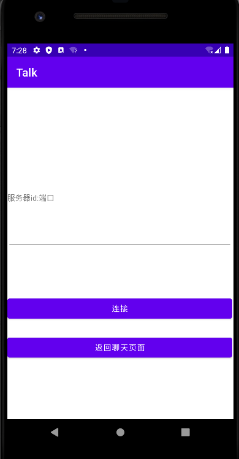
运行逻辑编写
新建websocket服务器
新建一个Maven项目，在依赖中添加：
<dependency>
<groupId>org.java-websocket</groupId>
<artifactId>Java-WebSocket</artifactId>
<version>1.5.3</version>
</dependency>新建server.java，并继承WebSocketServer，代码如下：
/**
* websocket服务端
*/
public class server extends WebSocketServer {
public server(int port) {
super(new InetSocketAddress(port));
}
@Override
public void onOpen(WebSocket webSocket, ClientHandshake clientHandshake) {
System.out.println(webSocket.getLocalSocketAddress() + "进来了");
}
@Override
public void onClose(WebSocket webSocket, int i, String s, boolean b) {
}
@Override
public void onMessage(WebSocket webSocket, String s) {
System.out.println("收到消息:"+s);
}
@Override
public void onError(WebSocket webSocket, Exception e) {
}
@Override
public void onStart() {
}
public static void main(String[] args) throws IOException, InterruptedException {
server server = new server(8111); // 设置端口号
server.start(); // 开启服务器
System.out.println("服务器端启动，端口号为: "+server.getPort());
// 等待输入
BufferedReader bufferedReader = new BufferedReader(new InputStreamReader(System.in));
while(true){
String in = bufferedReader.readLine(); // 不断读取输入的行数据
server.broadcast(in); // 服务端接受输入的行数据
/* 如果输入exit命令，则关闭服务器 */
if(in.equals("exit")){
server.stop(1000); // 停止server
break;
}
}
}
}导入java_websocket包
在本地Maven仓库中，按照路径\repository\org\java-websocket\Java-WebSocket\找到自己服务端的java-webSocket版本，这里用的是1.5.3，打开1.5.3文件夹，将Java-WebSocket-1.5.3.jar复制进安卓项目的libs文件夹中，如图：
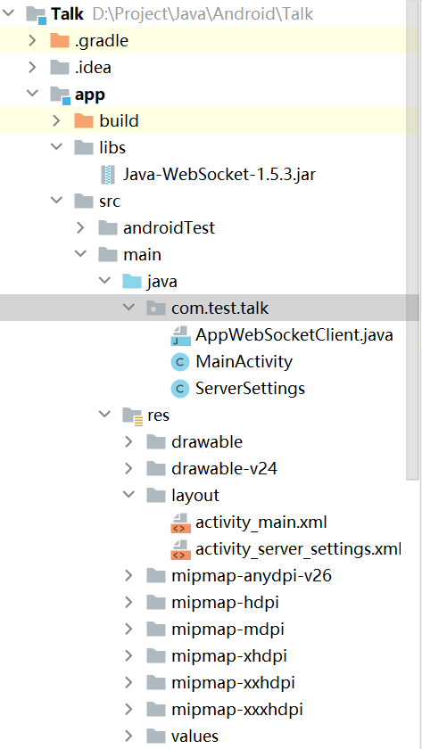
整个项目用的是本地的Maven仓库，若是用在线的仓库，请把该仓库的jar下载下来。若是不知道本地仓库的地址，选择IDEA菜单中的File -> Settings，搜索框中输入Maven，点击Maven即可查看IDEA设置的本地仓库地址
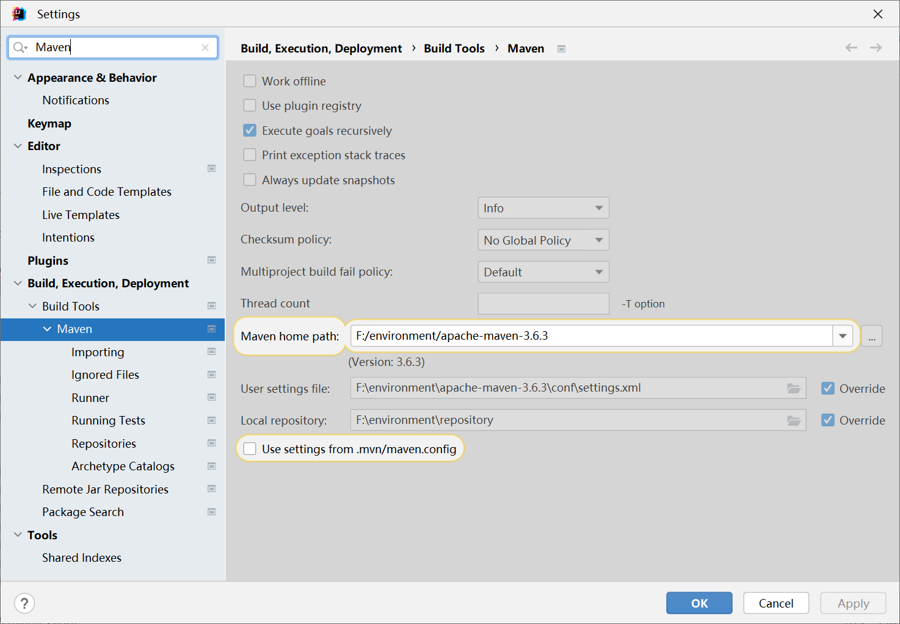
打开app下的build.gradle，在dependencies中添加implementation files("libs/Java-WebSocket-1.5.3.jar")，具体代码如下：
dependencies {
implementation 'androidx.appcompat:appcompat:1.2.0'
implementation 'com.google.android.material:material:1.3.0'
implementation 'androidx.constraintlayout:constraintlayout:2.0.4'
testImplementation 'junit:junit:4.+'
androidTestImplementation 'androidx.test.ext:junit:1.1.2'
androidTestImplementation 'androidx.test.espresso:espresso-core:3.3.0'
implementation files("libs/Java-WebSocket-1.5.3.jar")
}这就和Maven的引入依赖是一样的。项目中有两个build.gradle，注意一定要在app文件夹下的build.gradle引入依赖才有效
这里有个坑，打开server端项目中的pom.xml，按ctrl+鼠标左键点击java-websocket，其中有一段是这样的
<dependencyManagement>
<dependencies>
<dependency>
<groupId>org.slf4j</groupId>
<artifactId>slf4j-api</artifactId>
<version>${slf4j.version}</version>
</dependency>
<dependency>
<groupId>org.slf4j</groupId>
<artifactId>slf4j-simple</artifactId>
<version>${slf4j.version}</version>
<scope>test</scope>
</dependency>
<dependency>
<groupId>junit</groupId>
<artifactId>junit</artifactId>
<version>${junit.version}</version>
<scope>test</scope>
</dependency>
<dependency>
<groupId>org.json</groupId>
<artifactId>json</artifactId>
<version>${org.json.version}</version>
<scope>test</scope>
</dependency>
</dependencies>
</dependencyManagement>也就是说，maven导入依赖的时候，顺便也把其他的主要依赖也导进去了，但是在gradle不行，所以我们也要添加其他依赖，看代码，可知道需要引入的依赖为org.slf4j，照葫芦画瓢，在本地仓库中找到org.slf4j的jar包即可。
所以最终的依赖为：
implementation files("libs/Java-WebSocket-1.5.3.jar")
implementation files("libs/slf4j-api-1.7.5.jar")依赖配置完毕后，使用gradle -> build刷新项目即可
安卓项目新建WebSocket客户端
websocket中通常涉及多线程，所以需要设置同步，并加上线程锁
通常WebSocket客户端只需要创建一个对象即可，使用单例模式创建对象
在安卓项目中新建AppWebSocketClient.java，并且继承WebSocketClient，具体代码如下：
/**
* 客户端
*/
public class AppWebSocketClient extends WebSocketClient {
private static AppWebSocketClient client;
private AppWebSocketClient(String url) throws URISyntaxException {
super(new URI(url));
}
/**
* 单例模式创建对象，加上线程锁
* @param url websocket地址
* @return AppWebSocketClient对象
* @throws URISyntaxException url无法连接错误
*/
public static AppWebSocketClient getInstance(String url) throws URISyntaxException {
if(client == null){
synchronized (AppWebSocketClient.class) {
client = new AppWebSocketClient(url);
}
}
return client;
}
@Override
public void onOpen(ServerHandshake serverHandshake) {
}
@Override
public void onMessage(String s) {
System.out.println("服务端发送了一个请求:" + s);
}
@Override
public void onClose(int i, String s, boolean b) {
System.out.println("关闭客户端");
}
@Override
public void onError(Exception e) {
}
}WebSocket客户端与Activity整合
可以知道，WebSocket单独创建项目的时候，连接是没有什么问题的。但是与安卓整合的时候，需要额外做一些东西
首先建立组件交互，打开ServerSettings.java，引入上面创建的AppWebSocketClient.java，按钮创建监听器并书写逻辑。ServerSettings.java的具体代码如下：
/**
* 服务器设置页面
*/
public class ServerSettings extends AppCompatActivity {
protected static AppWebSocketClient client;
/**
* 页面跳转
*/
private void pageTransfer(){
Button MainActivityView = this.findViewById(R.id.button3);
MainActivityView.setOnClickListener(new View.OnClickListener() {
@Override
public void onClick(View v) {
Intent intent = new Intent(); // 添加意图
intent.setClass(ServerSettings.this,MainActivity.class); // 设置跳转页面的类
startActivity(intent); // 开始跳转
}
});
}
/**
* 连接socket服务器
*/
private void connectSocket(){
Button Connect = this.findViewById(R.id.button);
EditText IPandPort = this.findViewById(R.id.editTextTextPersonName);
Connect.setOnClickListener(new View.OnClickListener() {
@Override
public void onClick(View v) {
String IPandPortString = IPandPort.getText().toString();
if(client == null) {
try {
client = AppWebSocketClient.getInstance("ws://" + IPandPortString + "//");
client.connectBlocking(); // 连接服务器直到连接成功
Toast.makeText(getApplicationContext(), "连接服务器成功", Toast.LENGTH_LONG).show(); // 跳出弹窗提示
} catch (Exception e) {
throw new RuntimeException(e);
}
}else{
Toast.makeText(getApplicationContext(), "已经连接，无需再次连接", Toast.LENGTH_LONG).show(); // 跳出弹窗提示
}
}
});
}
@Override
protected void onCreate(Bundle savedInstanceState) {
super.onCreate(savedInstanceState);
setContentView(R.layout.activity_server_settings);
pageTransfer();
connectSocket();
}
}注意，安卓开WebSocket要开权限，具体权限为<uses-permission android:name="android.permission.INTERNET" />，该权限为请求网络权限，在AndroidManifest.xml中添加即可，该权限不需要动态请求权限。
多页面共用AppWebSocketClient类
我们虽然在ServerSettings.java中开启了SocketClient，但是该页面为连接部分，实际上需要在MainActivity.java中发送消息
这里的思路如下：
- ServerSettings.java中的AppWebSocketClient定义为类变量，在连接时新建对象并赋值即可
- MainActivity.java中获取ServerSettings.java中的AppWebSocketClient类变量，直接使用即可
这里有几点说明：
- 由于AppWebSocketClient中为单例模式，并且创建了线程锁。所以在Activity中创建AppWebSocketClient对象时只能创建一次，所以在连接时只能连接一次，再次连接会报错。（这一点在代码上已经增加了容错，思路就是通过检测类变量是否为空对象，为空就连接，不为空就提示）
- MainActivity中调用ServerSettings的AppWebSocketClient类变量时，要在
onStart中调用。这是由Activity的生命周期决定的。
MainActivity的具体代码如下：
/**
* 主页面
*/
public class MainActivity extends AppCompatActivity {
/**
* 页面跳转
*/
private void pageTransfer(){
Button serverSettingView = this.findViewById(R.id.button2);
serverSettingView.setOnClickListener(new View.OnClickListener() {
@Override
public void onClick(View v) {
Intent intent = new Intent();
intent.setClass(MainActivity.this,ServerSettings.class);
startActivity(intent);
}
});
}
/**
* 发送消息
*/
private void sockectSendMessage() {
AppWebSocketClient client = ServerSettings.client; // 获取ServerSettings页面中连接的client
EditText messageView = this.findViewById(R.id.edit);
Button send = this.findViewById(R.id.send);
send.setOnClickListener(new View.OnClickListener() {
@Override
public void onClick(View v) {
String message = messageView.getText().toString();
if(client == null){
Toast.makeText(getApplicationContext(),"还未连接服务器，请重新连接服务器",Toast.LENGTH_LONG).show(); // 提示未连接
}else{
client.send(message);
}
}
});
}
@Override
protected void onCreate(Bundle savedInstanceState) {
super.onCreate(savedInstanceState);
setContentView(R.layout.activity_main);
pageTransfer();
}
@Override
protected void onStart() {
super.onStart();
sockectSendMessage();
}
}这里还有一种办法，就是用intent.putExtra()这个方法将第一个页面的参数传进去，在第二个页面中使用getIntent()获取意图，并使用intent.getxxxExtra()将参数拿过来即可，xxx代表着数据类型，比如说在putExtra中传入的数据类型为String，则就是调用getStringExtra，其他数据类型以此类推。
使用该方法传对象的时候，该对象需要序列化，即在对象中implements Serializable，并在其他页面中调用getSerializableExtra获取对象。
运行测试
用真机，注意一定要是真机，与电脑连接同一个WIFI，并开启USB调试后连接电脑，待连接完毕后，启动安卓项目，让app安装到真机上。
启动server.java，放在后台，不要关闭服务端
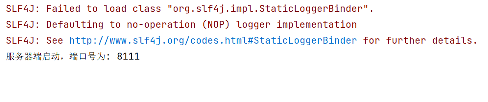
在电脑中的cmd输入ipconfig，查看电脑ip，这里为192.168.3.117，在安卓中的服务器设置页面中输入ip与服务端的端口，为：192.168.3.117:8111，输入完毕后点击连接，连接成功后弹出提示。

可以看到服务端也有提示
在主页面输入123456，点击发送
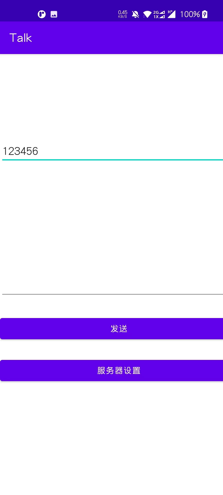
可看到服务端有消息收到
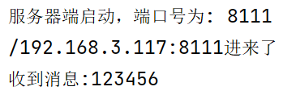
本博客所有文章除特别声明外，均采用 CC BY-SA 4.0 协议 ，转载请注明出处！